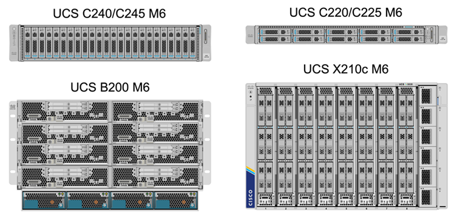
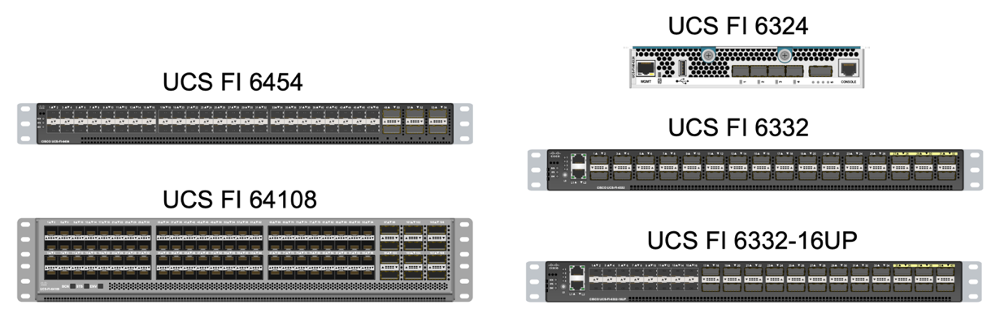
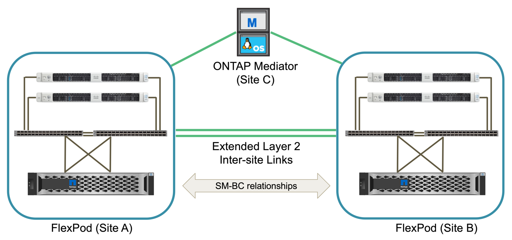
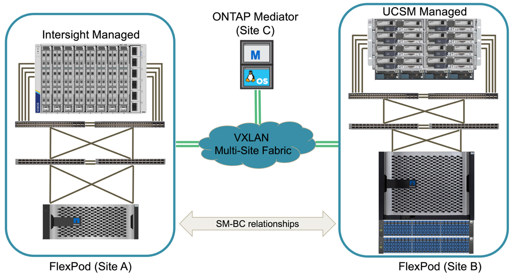
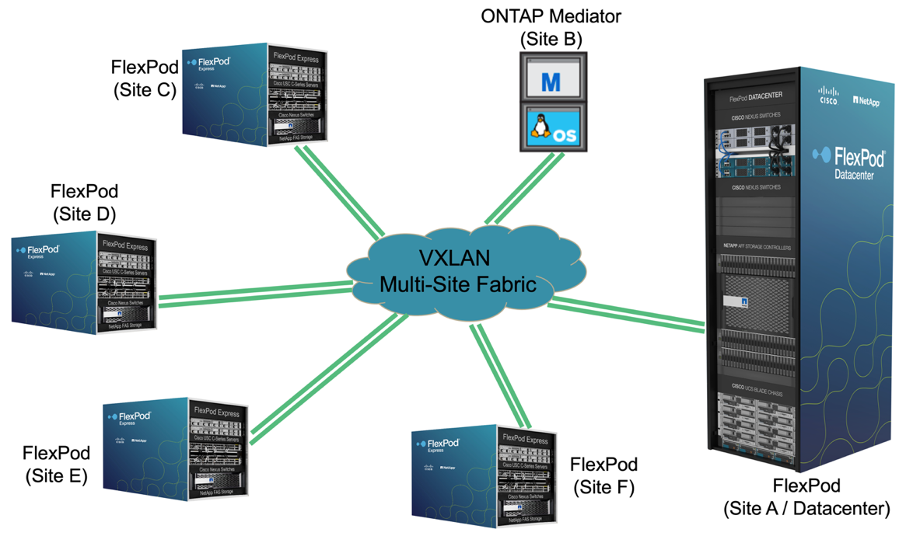

请求文档变更
请求文档变更 在 GitHub 上编辑
在 GitHub 上编辑 提供者指南
提供者指南FlexPod SM-BC 解决方案
提供者
解决方案概述
从较高的层面来看， FlexPod SM-BC 解决方案 由两个 FlexPod 系统组成，它们位于两个站点上，彼此连接并配对，可提供高度可用，高度灵活且高度可靠的数据中心解决方案 ，即使站点发生故障也能提供业务连续性。
除了部署两个新的 FlexPod 基础架构来创建 FlexPod SM-BC 解决方案 之外，还可以在与 SM-BC 兼容的两个现有 FlexPod 基础架构上实施解决方案 ，或者添加一个新的 FlexPod 以与现有 FlexPod 建立对等关系。
FlexPod SM-BC 解决方案 中的两个 FlexPod 系统无需在配置上完全相同。但是，两个 ONTAP 集群必须属于相同的存储系列，可以是两个 AFF 系统，也可以是两个 ASA 系统，但硬件型号不一定相同。SM-BC 解决方案 不支持 FAS 系统。
这两个 FlexPod 站点需要网络连接，以满足解决方案 带宽和服务质量要求，并且根据 ONTAP SM-BC 解决方案 的要求，站点之间的往返延迟不超过 10 毫秒（ 10 毫秒）。对于此 FlexPod SM-BC 解决方案 验证，两个 FlexPod 站点通过扩展的第 2 层网络在同一实验室中进行互连。
NetApp ONTAP SM-BC 解决方案 可在两个 NetApp 存储集群之间提供同步复制，以便在园区或城域区域实现高可用性和灾难恢复。部署在第三个站点的 ONTAP 调解器可监控解决方案 ，并在发生站点灾难时实现自动故障转移。下图简要展示了解决方案 组件。

借助 FlexPod SM-BC 解决方案 ，您可以在分布式且集成的基础架构上部署基于 VMware vSphere 的私有云。通过集成的解决方案 ，可以将多个站点作为一个解决方案 基础架构进行协调，以保护数据服务免受各种单点故障情形和整个站点故障的影响。
本技术报告重点介绍了 FlexPod SM-BC 解决方案 的一些端到端设计注意事项。我们鼓励从业人员参考各种 FlexPod CVD 和 NVA 中提供的信息，了解更多 FlexPod 解决方案 实施详细信息。
虽然解决方案 已通过根据 CVD 中记录的 FlexPod 最佳实践部署两个 FlexPod 系统进行了验证，但它会考虑到 SM-BC 解决方案 的要求。本报告中讨论的已部署 FlexPod SM-BC 解决方案 已在各种故障情形以及模拟站点故障情形下进行了故障恢复能力和容错验证。
解决方案要求
FlexPod SM-BC 解决方案 旨在满足以下关键要求：
-
业务关键型应用程序和数据服务在发生完整数据中心（站点）故障时的业务连续性
-
灵活的分布式工作负载放置，可在数据中心之间移动工作负载
-
站点关联性，即在正常操作期间从同一数据中心站点本地访问虚拟机数据
-
在发生站点故障时快速恢复，不会丢失任何数据
解决方案组件
Cisco 计算组件
Cisco UCS 是一种集成计算基础架构，可提供统一计算资源，统一网络结构和统一管理。它使企业能够自动执行并加快应用程序部署，包括虚拟化和裸机工作负载。Cisco UCS 支持多种部署用例，包括远程和分支机构，数据中心和混合云用例。根据特定的解决方案 要求， FlexPod Cisco 计算实施可以使用不同规模的各种组件。以下各小节提供了某些 UCS 组件上的追加信息 。
UCS 服务器和计算节点
下图显示了 UCS 服务器组件的一些示例，包括 UCS C 系列机架式服务器，采用 B 系列刀片式服务器的 UCS 5108 机箱以及采用 X 系列计算节点的新 UCS X9508 机箱。Cisco UCS C 系列机架式服务器采用一个和两个机架单元（ RU ）外形规格，采用 Intel 和 AMD CPU 型号，并具有各种 CPU 速度和核心，内存和 I/O 选项。Cisco UCS B 系列刀片式服务器和新的 X 系列计算节点还具有各种 CPU ，内存和 I/O 选项，它们在 FlexPod 架构中均受支持，可满足各种业务需求。

除了此图所示的最新一代 C220/C225/C240/C245 M6 机架式服务器， B200 M6 刀片式服务器和 X210c 计算节点之外，如果仍然支持前几代机架式和刀片式服务器，也可以使用它们。
I/O 模块和智能网络结构模块
I/O 模块（ IOM ） / 阵列扩展器和智能阵列模块（ IFM ）分别为 Cisco UCS 5108 刀片式服务器机箱和 Cisco UCS X9508 X 系列机箱提供统一的网络结构连接。
第四代 UCS IOM 2408 具有八个 25-G 统一以太网端口，用于通过互联阵列（ Fabric Interconnect ， FI ）连接 UCS 5108 机箱。每个 2408 都通过中板与机箱中的每个刀片式服务器建立了四个 10-G 背板以太网连接。
UCSX 9108 25G IFM 具有八个 25-G 统一以太网端口，用于通过互联阵列连接 UCS X9508 机箱中的刀片式服务器。每个 9108 都有四个 25 G 连接，连接到 X9108 机箱中的每个 UCS X210c 计算节点。9108 IFM 还可与互联阵列配合使用来管理机箱环境。
下图显示了 UCS 5108 机箱的 UCS 2408 及更早版本 IOM 以及 X9508 机箱的 9108 IFM 。

UCS 互联阵列
Cisco UCS 互联阵列（ Fabric Interconnects ， CLI ）可为整个 Cisco UCS 提供连接和管理功能。通常作为主动 / 主动对部署，系统的 CLI 会将所有组件集成到一个由 Cisco UCS Manager 或 Cisco Intersight 控制的高可用性管理域中。Cisco UCS CLI 为系统提供一个统一网络结构，具有低延迟和无损的直通交换功能，可使用一组缆线支持 LAN ， SAN 和管理流量。
第四代 Cisco UCS FI 有两种变体： UCS FI 6454 和 64108 。其中包括支持 10/25 Gbps 以太网端口， 1/25-Gbps 以太网端口， 40/100-Gbps 以太网上行链路端口以及可支持 10/25 千兆以太网或 8/16/32-Gbps 光纤通道的统一端口。下图显示了第四代 Cisco UCS CLI 以及也支持的第三代型号。


|
要支持 Cisco UCS X 系列机箱，需要在 Intersight Managed Mode （ IMM ）下配置第四代互联阵列。但是，在 IMM 模式和 UCSM 托管模式下均可支持 Cisco UCS 5108 B 系列机箱。 |
|
|
UCS FI 6324 采用 IOM 外形规格，并嵌入在 UCS Mini 机箱中，适用于仅需要小型 UCS 域的部署。 |
UCS 虚拟接口卡
Cisco UCS 虚拟接口卡（ Virtual Interface Card ， VIC ）可为机架式和刀片式服务器统一系统管理以及 LAN 和 SAN 连接。它最多支持 256 个虚拟设备，可以作为虚拟网络接口卡（ Virtual Network Interface Card ， vNIC ），也可以作为使用 Cisco SingleConnect 技术的虚拟主机总线适配器（ Virtual Host Bus Adapter ， vHBA ）。通过虚拟化， VIC 卡大大简化了网络连接，并减少了解决方案 部署所需的网络适配器，缆线和交换机端口的数量。下图显示了一些可用于 B 系列和 C 系列服务器以及 X 系列计算节点的 Cisco UCS VIC 。

不同的适配器型号支持不同的刀片式服务器和机架服务器，它们具有不同的端口数，端口速度以及模块化主板 LAN （ mLOM ），夹层卡和 PCIe 接口的外形规格。这些适配器可以支持 10/25/40/100-G 以太网和以太网光纤通道（ FCoE ）的某些组合。它们整合了 Cisco 的融合网络适配器（ Converged Network Adapter ， CNA ）技术，支持全面的功能集，并简化了适配器管理和应用程序部署。例如， VIC 支持 Cisco 的 Data Center Virtual Machine Fabric Extender （ VM-FEX ）技术，该技术可将 Cisco UCS 互联阵列端口扩展到虚拟机，从而简化服务器虚拟化部署。
通过在 mLOM ，夹层和端口扩展器以及网桥卡配置中组合使用 Cisco VIC ，您可以充分利用刀片式服务器可用的带宽和连接。例如，通过使用 VIC 14825 （ mLOM ）和 14425 （夹层）上的两个 25-G 链路以及 X210c 计算节点上的 14000 （网桥卡）， VIC 总带宽为 2 x 50-G + 2 x 50-G ， 或者，采用双 IFM 配置时，每个网络结构 /IFM 需要 100 G ，而每个服务器总共需要 200 G 。
有关 Cisco UCS 产品系列，技术规格和文档的详细信息，请参见 "Cisco UCS" 有关信息，请访问网站。
Cisco 交换组件
Nexus 交换机
FlexPod 使用 Cisco Nexus 系列交换机为 Cisco UCS 和 NetApp 存储控制器之间的通信提供以太网交换网络结构。FlexPod 部署支持当前支持的所有 Cisco Nexus 交换机型号，包括 Cisco Nexus 3000 ， 5000 ， 7000 和 9000 系列。
在为 FlexPod 部署选择交换机型号时，需要考虑许多因素，例如性能，端口速度，端口密度，交换机延迟， 以及 ACI 和 VXLAN 支持等协议，以实现您的设计目标以及交换机的支持时间跨度。
许多最新的 FlexPod CVD 均使用 Cisco Nexus 9000 系列交换机进行验证，例如 Nexus 9336C-fx2 和 Nexus 93180YC-fx3 ，这些交换机可在紧凑的 1U 外形规格中提供高性能 40/100G 和 10/25G 端口，低延迟和卓越的能效。可通过上行链路端口和分支缆线支持其他速度。下图显示了几个 Cisco Nexus 9k 和 3k 交换机，包括用于此验证的 Nexus 9336C-x2 和 Nexus 3232C 。

请参见 "Cisco 数据中心交换机" 有关可用 Nexus 交换机及其规格和文档的详细信息。
MDS 交换机
Cisco MDS 9100/9200/9300 系列光纤交换机是 FlexPod 架构中的一个可选组件。这些交换机高度可靠，高度灵活，安全，可提供对网络结构中流量的可见性。下图显示了一些示例 MDS 交换机，这些交换机可用于为 FlexPod 解决方案 构建冗余 FC SAN 网络结构，以满足应用程序和业务需求。

Cisco MDS 9132T/9148T/9396T 高性能 32G 多层光纤交换机经济高效，并且高度可靠，灵活且可扩展。高级存储网络特性和功能易于管理，并与整个 Cisco MDS 9000 系列产品组合兼容，可实现可靠的 SAN 实施。
这款下一代硬件平台内置了一流的 SAN 分析和遥测功能。通过检查帧报头提取的遥测数据可以流式传输到分析可视化平台，包括 Cisco Data Center Network Manager 。FlexPod 还支持支持 16G FC 的 MDS 交换机，例如 MDS 9148S 。此外，除了 FC 协议之外，还支持 FCoE 和 FCIP 协议的多服务 MDS 交换机（例如 MDS 9250i ）也属于 FlexPod 解决方案 产品组合。
在 9132T 和 9396T 等半模块化 MDS 交换机上，可以添加额外的端口扩展模块和端口许可证以支持额外的设备连接。在 9148T 等固定交换机上，可以根据需要添加其他端口许可证。这种按需购买的灵活性提供了一个运营支出部分，有助于降低实施和运行基于 MDS 交换机的 SAN 基础架构的资本支出。
请参见 "Cisco MDS 光纤交换机" 有关可用 MDS 光纤交换机的详细信息，请参见 "NetApp IMT" 和 "Cisco 硬件和软件兼容性列表" 有关支持的 SAN 交换机的完整列表。
NetApp 组件
要创建 FlexPod SM-BC 解决方案 ，需要运行 ONTAP 软件 9.8 或更高版本的冗余 NetApp AFF 或 ASA 控制器。建议在 SM-BC 部署中使用最新的 ONTAP 版本（当前为 9.10.1 ），以便利用 ONTAP 持续创新，性能和质量改进以及增加的最大对象数量来支持 SM-BC 。
NetApp AFF 和 ASA 控制器具有行业领先的性能和创新功能，可提供企业级数据保护和功能丰富的数据管理功能。AFF 和 ASA 系统支持端到端 NVMe 技术，包括 NVMe 连接 SSD 和基于光纤通道的 NVMe （ NVMe/FC ）前端主机连接。通过采用基于 NVMe/FC 的 SAN 基础架构，您可以提高工作负载吞吐量并减少 I/O 延迟。但是，基于 NVMe/FC 的数据存储库当前只能用于不受 SM-BC 保护的工作负载，因为 SM-BC 解决方案 当前仅支持 iSCSI 和 FC 协议。
NetApp AFF 和 ASA 存储控制器还为客户提供了一个混合云基础，让他们可以利用 NetApp Data Fabric 带来的无缝数据移动性。借助 Data Fabric ，您可以轻松地将数据从数据生成的边缘获取到使用数据的核心和云，从而利用按需弹性计算以及 AI 和 ML 功能，获得切实可行的业务洞察力。
如下图所示， NetApp 提供了各种存储控制器和磁盘架，可满足您的性能和容量要求。有关 NetApp AFF 和 ASA 控制器功能和规格的信息，请参见下表以获取产品页面的链接。

| 产品系列 | 技术规格 |
|---|---|
AFF 系列 |
|
ASA 系列 |
请参见 "NetApp 磁盘架和存储介质文档" 和 "NetApp Hardware Universe" 有关每个存储控制器型号的磁盘架和支持的磁盘架的详细信息。
解决方案 拓扑
FlexPod 解决方案的拓扑结构十分灵活，可以纵向扩展或横向扩展以满足不同的解决方案 要求。如果解决方案 需要业务连续性保护，并且只需要最少的计算和存储资源，则可以使用简单的解决方案 拓扑，如下图所示。这种简单的拓扑结构使用 UCS C 系列机架服务器和 AFF/ASA 控制器，并在控制器中使用 SSD ，而无需额外的磁盘架。

冗余计算，网络和存储组件通过组件之间的冗余连接互连在一起。这种高可用性设计可提供解决方案 故障恢复能力，并使 IT 能够承受单点故障情形。多站点设计和 ONTAP SM-BC 同步数据复制关系可提供业务关键型数据服务，尽管可能会发生单站点存储故障。
在城域中，数据中心和分支机构之间的公司可能使用的非对称部署拓扑可能如下图所示。对于这种非对称设计，数据中心需要具有更多计算和存储资源的更高性能 FlexPod 。但是，分支机构的需求较低，并且 FlexPod 可以小得多。

对于计算和存储资源需求较高的公司以及多个站点，基于 VXLAN 的多站点网络结构可以使多个站点拥有无缝网络结构，从而提高应用程序的移动性，从而可以从任何站点为应用程序提供服务。
可能存在使用 Cisco UCS 5108 机箱和 B 系列刀片式服务器的现有 FlexPod 解决方案 ，这些服务器必须受新 FlexPod 实例的保护。新的 FlexPod 实例可以使用最新的 UCS X9508 机箱，其中 X210c 计算节点由 Cisco Intersight 管理，如下图所示。在这种情况下，每个站点上的 FlexPod 系统都连接到一个更大的数据中心网络结构，而这些站点则通过互连网络进行连接，形成一个 VXLAN 多站点网络结构。

对于在城域中设有数据中心和多个分支机构的公司，这些公司都需要受到保护才能提供业务连续性， 可以实施下图所示的 FlexPod SM-BC 部署拓扑，以保护关键应用程序和数据服务，使所有分支站点实现零 RPO 和接近零 RTO 目标。

对于此部署模式，每个分支机构都与数据中心建立所需的 SM-BC 关系和一致性组。您必须考虑支持的 SM-BC 对象限制，以便整体一致性组关系和端点计数不会超过数据中心支持的最大值。